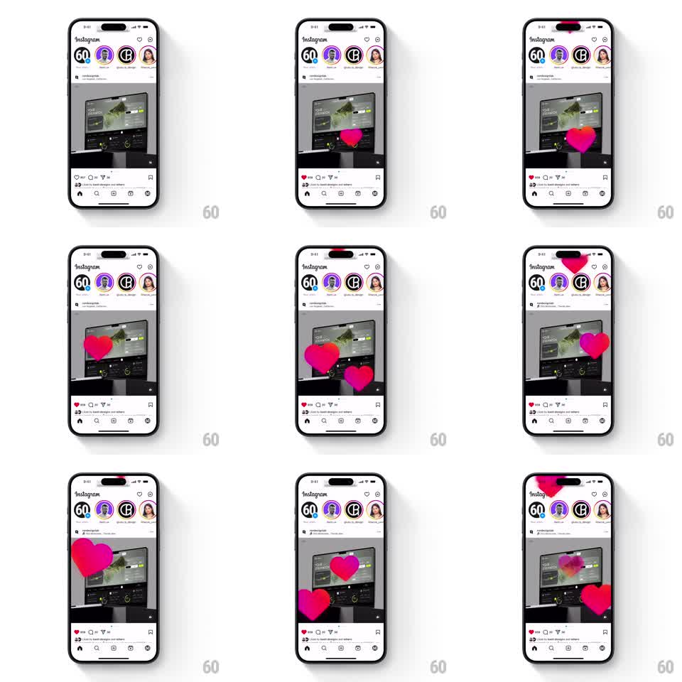

Media
Frame-by-frame

Rebuild this animation 1:1: Instagram's double-tap like - a big heart bursts at the tap point, scales up with a slight rotation, then drifts upward and fades; rapid double-taps stack multiple floating hearts, and the action bar's heart fills red.

Rebuild this animation 1:1: Instagram's double-tap like - a big heart bursts at the tap point, scales up with a slight rotation, then drifts upward and fades; rapid double-taps stack multiple floating hearts, and the action bar's heart fills red. ## Integration Integration: stack-agnostic spec - springs given as stiffness/damping, timed motions as duration + curve; map every value to your framework and animation library of choice. ## Scene Instagram feed: stories rail, a photo post, action bar (heart, comment, share, bookmark), caption. The like hearts are pink-red gradient with soft glow. ## Motion spec Pattern: burst-scale-rotate + upward drift fade. - Double-tap on the post: a heart spawns at the tap point at scale 0.3, springs to 1.0 with overshoot (spring ~350/20, ~300ms) and a random slight rotation (~±12deg). - Hold ~250ms, then the heart drifts upward ~80px while fading out (~450ms, ease-in). - Rapid repeats: each tap spawns an independent heart - several can drift simultaneously, each at its own phase. - Action bar: the small heart icon pops (scale 1.3 -> 1, 200ms) and fills red on the first tap; like count increments. - The post itself doesn't move (no zoom). ## Calibration - Spawn point = tap point, always - not screen center (unless tapped center). - Rotation is randomized per heart so stacked taps don't look cloned. ## Reduced motion Single heart fades at the tap point; no drift or rotation. ## Don't miss - The heart is BIG (roughly a quarter of the post width) - this is the celebratory burst, not the icon. - Fade-out is paired with upward drift, never a plain vanish.